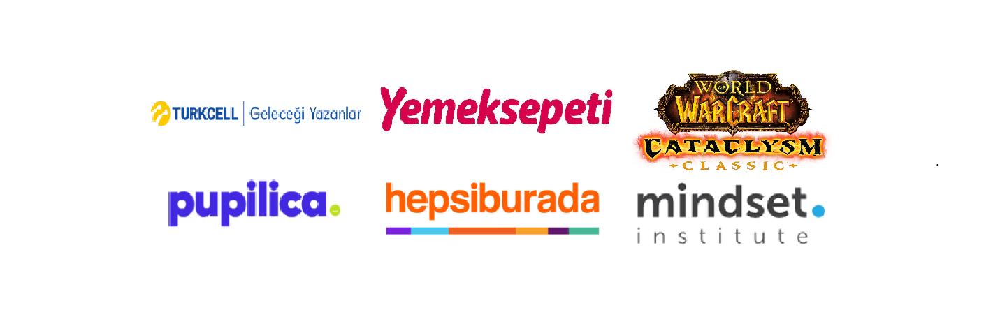
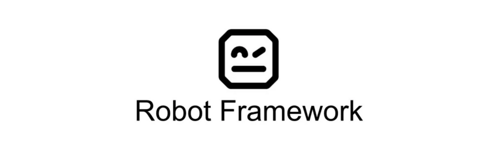
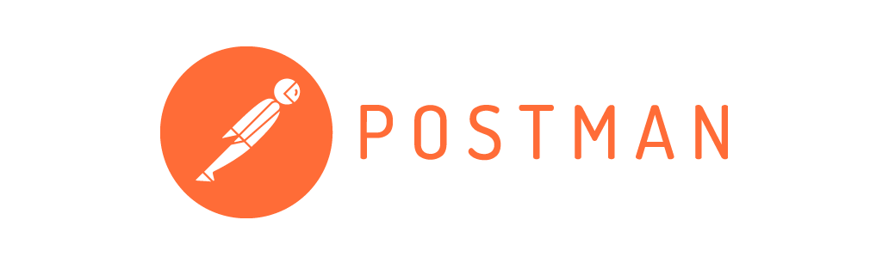
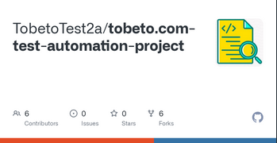

Defect Tracker Portfolio
A comprehensive bug tracking portfolio showcasing defects identified across various applications.
Software QA Tester
“Finding bugs is my superpower”
Password-protected PDFs
mehmeturgutaksel@gmail.comI'm a former professional esports player turned QA Tester, with a deep-seated passion for playing and testing video games. I bring a competitive mindset and a keen eye for detail to software quality.
A strategic approach to finding issues, shaped by years of competitive gaming.
A player's perspective on usability, game behavior, and the overall experience.
After retiring from professional esports and content creation, I channeled my passion for gaming into QA testing. My work spans projects from mobile games to large-scale MMORPGs, with a focus on user experience and clear defect documentation.
Additional training: Java Test Automation, JCI Istanbul / YASAD / Virgosol, May–August 2024. Software Testing & Quality Assurance, İstanbul Kodluyor / Enocta / Republic of Türkiye Ministry of Industry and Technology / Bridges Outcomes Partnerships, February–June 2024.
Public Relations & Advertising
2015–2017
İstanbul Kodluyor / Enocta · 2024
Google Developer CommunitiesJun 2026
brick instituteJul 2025
Wise QuarterJul 2025
Techcareer.netJan 2025
UnityDec 2024
VIRGOSOLAug 2024
McKinsey & CompanyJul 2024
Galatasaray ÜniversitesiMay 2024
TobetoMay 2024
CiscoApr 2024
Turkcell Geleceği YazanlarApr 2024
Patika.devApr 2024
BTK AkademiFeb 2024
KodluyoruzDec 2023
freeCodeCampAug 2023

A comprehensive bug tracking portfolio showcasing defects identified across various applications.

Developed test automation for amazon.com.tr using Robot Framework.

Created test scenarios for RESTful APIs using Postman.

An end-to-end test automation project for a web application, demonstrating skills and frameworks learned during the bootcamp.
For more projects, check my GitHub ↗.